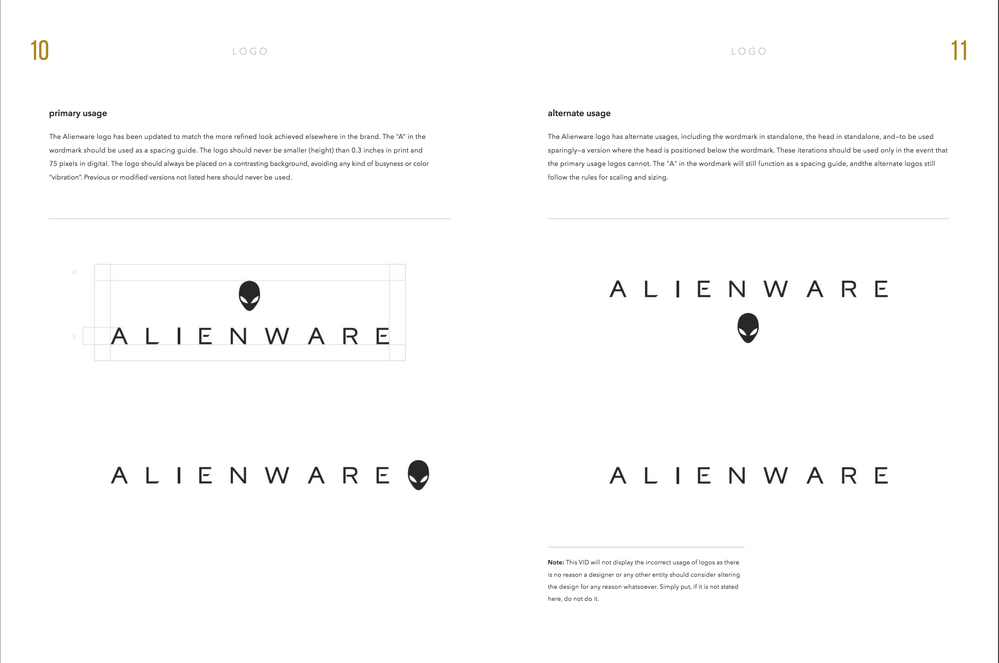

Step 4: Creating the Digital Guidelines Document
The digital guidelines document that I created for Alienware contains a lot of information from the branding guidelines document I used for the entire project. My main focus for the digital guidelines document was to create a visually appealing document that contained all the information it needed. Some information I added that isn't from the companies original branding guidelines are specifics of designing for web. This was the last step in the project for me before it was completed. Pictured above is a page from Aliewares branding guidelines.